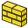

 {{{Name/jp}}} |
| メニュー位置 |
|---|
| Arch -> Wall |
| ワークベンチ |
| 建築 |
| デフォルトのショートカット |
| W A |
| 参照 |
| Arch Structure/jp |
{kind=link}
説明
このツールはスクラッチから、または他のシェイプベースオブジェクトの上にWallオブジェクトを作成するためのものです。既存の形状の上に作成する場合、壁は以下に基いて作成できます：
- ライン、ワイヤー、スケッチといった線状に伸びる2Dオブジェクトの場合は厚み、配置位置（右揃え、左揃え、センタリング）、高さを変更できます
- 平らな面の場合は高さのみ変更できます
- ソリッドの場合は変更できるものはありません
{kind=link}
上の例ではライン、ワイヤー、面、ソリッド、スケッチの上に作成された壁を示しています
壁には加算と減算を行うこともできます。加算とは壁の形状に他のオブジェクトの形状を結合させることで、減算とはそれを解除することです。加算と減算は Arch Addツールと
Arch Addツールと Arch Removeツールを使って行います。加算と減算によって高さや厚みといった壁のパラメータが影響を受けることはありません。これらはずっと変更することができます。
Arch Removeツールを使って行います。加算と減算によって高さや厚みといった壁のパラメータが影響を受けることはありません。これらはずっと変更することができます。
床などの高レベルオブジェクトに含まれた場合でも壁は自動でその高さを調整します。高さを0に維持すると壁は親オブジェクトで指定された高さを使用します。
いくつもの壁が交わる場合はそれらを床に配置して形状を交差させる必要があります。
使用方法
スクラッチからの壁の製図
-
 Arch Wallボタンを押すか、Wキーを押した後にAキーを押してください
Arch Wallボタンを押すか、Wキーを押した後にAキーを押してください - 3Dビューで一つ目の点をクリックするか、座標を入力してください
- 3Dビューで二つ目の点をクリックするか、座標を入力してください
選択されたオブジェクト上での壁の製図
- 基礎となる幾何オブジェクト（製図オブジェクト、スケッチなど）を一つ以上選択してください
- Arch Wallボタンを押してください
- 必要に応じて高さや厚みなどのプロパティを調整してください
オプション
- 製図中にタスクパネルから高さ、厚み、配置位置を設定することができます
- 壁を既存の壁にスナッピングすると双方の壁が一つに結合されます。二つの壁の結合のされ方はそのプロパティに依存します。厚み、高さ、配置位置が同じ場合には結合結果の壁は複数の線分からできたスケッチに基づいた一つのオブジェクトになり、そうでない場合は二つ目に選んだ壁が最初のものに加算されます。
- 点を指定した後でX、Y、またはZを押すと次の点を指定した軸上に拘束できます。
- 手入力で座標を指定する場合は各X、Y、Z成分を数値で入力してからENTERを押してください。
- Rを押すか、チェックボックスをクリックしてRelativeボタンのチェック/非チェックを切り替えてください。相対（Relative）モードがオンの場合、二つ目の点の座標は一つ目の点に対する相対値として扱われ、オフの場合は二つとも原点(0,0,0)からの絶対座標として扱われます。
- 製図中に点を距離によらず最も近いスナップ位置に強制的にスナッピングしたい場合はCTRLを押してください。
- 製図中に一つ目の点に対して水平、または垂直に二つ目の点を拘束したい場合はSHIFTを押してください。
- 現在のコマンドを中断したい場合はESC、またはCancelボタンを押してください。
- 作成後に3Dビューで壁をダブルクリックすると編集モードに移行してその加算オブジェクト、減算オブジェクトのアクセス、変更を行うことができます。
プロパティ
- DATAWidth: 壁の厚み
- DATAHeight: 壁の高さ
- DATAAlignment: 基準線に対する壁の配置位置
スクリプト処理
以下の関数を使うとマクロやPythonコンソールからWallツールを使用できます
makeWall (obj,[width],[height],[align],[name]): スケッチ、製図オブジェクト、面、ソリッドといったオブジェクトを元に壁を作成。 alignには"Center"、"Left"、または"Right"を指定できる。
例:
import FreeCAD, Draft, Arch baseline = Draft.makeLine(FreeCAD.Vector(0,0,0),FreeCAD.Vector(2,0,0)) Arch.makeWall(baseline,0.1,2)